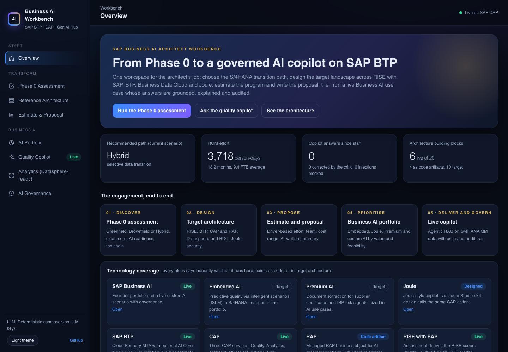
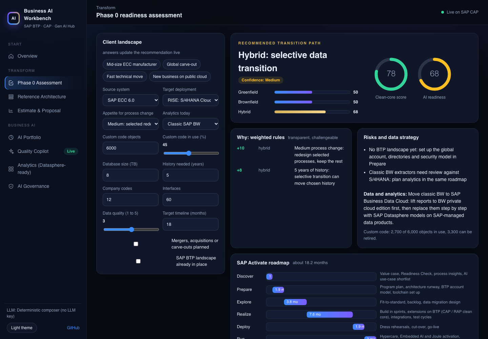
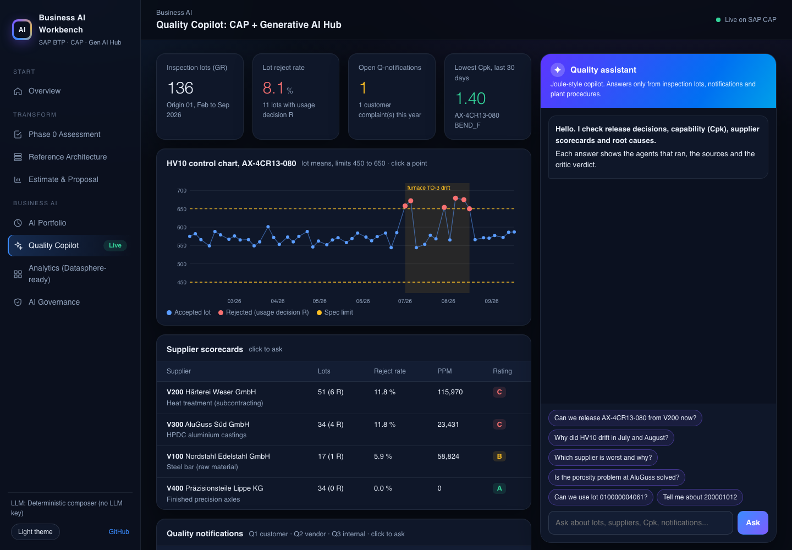

SAP Business AI · SAP BTP · CAP · Generative AI Hub
SAP Business AI Architect Workbench
One workspace for the architect's job: choose the S/4HANA transition path, design the target landscape across RISE with SAP, BTP, Business Data Cloud and Joule, estimate the program and write the proposal, then run a live Business AI use case whose answers are grounded, explained and audited.

What it does
Phase 0 assessmentGreenfield, Brownfield or Hybrid with explainable rules, clean-core and AI-readiness scores, toolchain, RISE scope, SAP Activate roadmap.
Reference architectureRISE, BTP, CAP, RAP, Business Data Cloud, Datasphere, Joule, AI Core, security. Every block marked live, code artifact or target.
Estimate and proposalDriver-based effort, team and cost range. AI-written executive summary checked by a grounding critic.
Business AI portfolioEmbedded AI, Joule, Premium AI and custom AI on BTP, ranked by value and feasibility.
Live quality copilotAgentic RAG over S/4HANA-shaped QM data. Release decisions come from control-plan rules in code, never from the LLM.
AI governanceAudit trail, critic metrics and a one-click red-team check through the real pipeline.
Results
- Live on Kubernetes (k3s) on Oracle Cloud, Frankfurt; 28 automated tests pass in GitHub Actions CI
- Red-team check passes 4 of 4 live tests: prompt injection, release, recurrence, out-of-scope
- Every number in an LLM answer is checked against source data; numbers written as words are rejected
- Finds the root cause hidden in 136 inspection lots (furnace drift, 6 rejected lots, 1 customer complaint) and refuses release when the data says no
- Generates a complete client proposal in about 1 second with a grounded AI summary


Stack
SAP CAP (Node.js) · OData V4 · SAP AI SDK (Generative AI Hub orchestration) with Groq fallback · ABAP RAP · MTA for Cloud Foundry · Docker · Kubernetes · GitHub Actions
Demo data is fictional and shaped like S/4HANA Quality Management. The BTP trial has no SAP AI Core, so the live demo uses Groq; the Generative AI Hub path switches on with an AI Core binding. Estimates are rough-order-of-magnitude rules for discussion.